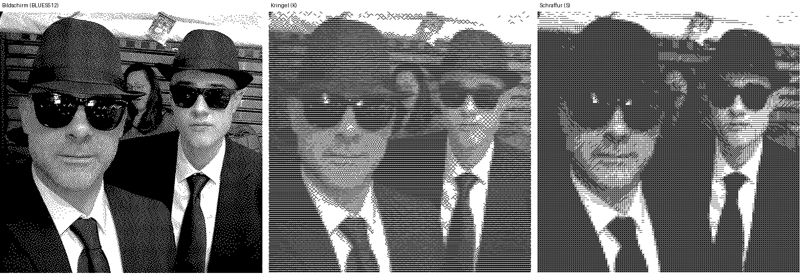
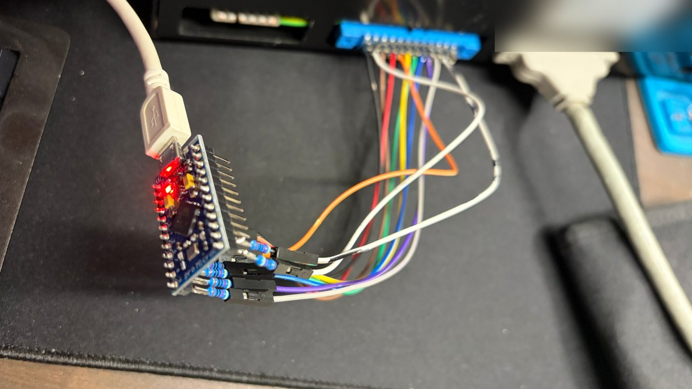
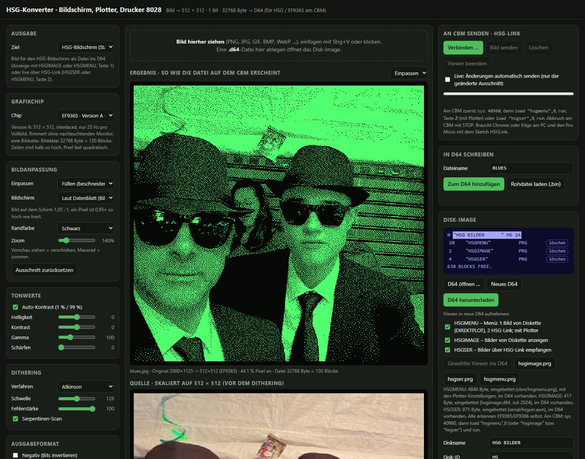

Commodore CBM 8032 / 4032 · HSG/LSG-Board (EF9365 / EF9366)
CBM-HSG-Konverter
Fotos auf den HSG-Bildschirm, live vom PC, auf den HP-Plotter
und auf den Typenraddrucker CBM 8028 – die komplette Anleitung
1 · Lokal am CBMBild am PC aufbereiten, auf Diskette, am CBM laden
2 · Mit SerialBilder live vom PC über USB und den Userport (HSG-Link)
3 · PlottenDas angezeigte Bild als Schraffur auf einen HP-Plotter
4 · DruckenTextgrafik auf dem Typenraddrucker CBM 8028
1 · Überblick
2 · Was du brauchst
3 · Erste Schritte am CBM
4 · Der HTML-Konverter
5 · Anwendungsfall 1: Lokal am CBM
6 · Anwendungsfall 2: Mit Serial (HSG-Link)
7 · Anwendungsfall 3: Plotten
8 · Anwendungsfall 4: Drucken auf dem 8028
9 · HSGMENU: alle Tasten
10 · Fehlersuche
11 · Anhang
Stand 19.11.2026. Diese Anleitung fasst alles zusammen. Für den Bau des HSG-Link-Kabels gibt es zusätzlich die ausführliche HSG-Link-Anleitung (HSG-Link-Anleitung.pdf) mit Lötplan.
1 · Überblick
Das HSG-Board („Hochauflösende Grafik“ von Commodore Deutschland, nachgebaut als LSG) zeigt 512 × 256 Punkte (EF9366) oder 512 × 512 Punkte (EF9365) in Schwarz-Weiß. Dieses Projekt bringt beliebige Fotos auf dieses Board und von dort aufs Papier.
Wie es dazu kam
Am Anfang stand die Low-Speed-Graphik (LSG) von InsaneDruid, ein zu 100 % kompatibler Nachbau der Commodore-HSG-Karte für CBM 8032, 4016 und 4032 (github.com/InsaneDruid/Low-Speed-Graphik, CC BY-SA 4.0). Sie entstand mit Hilfe der Runde im VzEkC-Forum. Mit der Karte kamen zwei kleine Programme:
bmp2hsg.py von InsaneDruid (Python, 2024, CC0), das Ur-Programm des Konverters. Es wandelt eine fertige Schwarz-Weiß-BMP mit 512 × 256 oder 512 × 512 Punkten in eine ladbare HSG-Datei.- Der HSG Image Loader (HSGIMAGE) von AndyG (Juli 2024). Er zeigt eine solche Datei am CBM an.
Daraus wurde Schritt für Schritt dieses Projekt:
- Ein HTML-Konverter, der jedes Foto direkt im Browser aufbereitet.
- HSG-Link für die Übertragung live über den Userport.
- HSGMENU mit Plotter-Ausgabe.
- Zuletzt die Textgrafik für den Typenraddrucker CBM 8028.
Die Bausteine
| Teil | Was es tut | Wo |
|---|
HTML-Konverter hsg-converter.html | Bild aufbereiten (Ausschnitt, Tonwerte, Dithering), Vorschau, D64-Disketten zusammenstellen, Bilder per HSG-Link senden, Plot- und Druckvorschau | PC, Browser |
| HSGMENU | Hauptprogramm am CBM: Menü mit „1 = Bild von Diskette“ und „2 = HSG-Link“, in beiden Fällen mit Plotten | CBM |
| HSGIMAGE | Original-Loader von AndyG: Bild von Diskette anzeigen | CBM |
| HSGSER | Reiner HSG-Link-Empfänger ohne Plotter | CBM |
| HSGPLOT, DIREKTPLOT | Einzelprogramme (HSG-Link + Plotter bzw. Diskette + Plotter), Inhalt wie HSGMENU | CBM |
| DRUCK8028 | Schickt eine Textgrafik-Datei an den Typenraddrucker | CBM |
| HSG-Link | Arduino Pro Micro + Kabel: USB vom PC auf den Userport des CBM | Hardware |
Welcher Weg für welchen Zweck?
| Du willst … | Weg | Kapitel |
|---|
| Bilder vorbereiten und ohne PC-Verbindung am CBM zeigen | HTML-Konverter → D64 → Floppy → HSGMENU, Taste 1 | 5 |
| Bilder direkt vom PC zeigen, Ausschnitt und Helligkeit live probieren | HTML-Konverter → HSG-Link → HSGMENU, Taste 2 | 6 |
| Das Bild auf Papier zeichnen | wie 1 oder 2, dann Taste S, K oder P/H | 7 |
| Das Bild als Textgrafik drucken | HTML-Konverter (Ausgabe „Drucker 8028“) → D64 → DRUCK8028 | 8 |

Links das Bild am HSG-Schirm, in der Mitte als Kringel-Plot, rechts als Schraffur-Plot (Simulation).
2 · Was du brauchst
Immer
- CBM 8032 oder 4032 mit BASIC 4 und 32 KByte RAM. Der Schraffur-Modus nutzt den Speicher bis
$5FFF.
- HSG- oder LSG-Board mit EF9365 (Version A, 512 × 512, flimmert ohne nachleuchtenden Monitor) oder EF9366 (Version B, 512 × 256, flimmerfrei).
- Ein Laufwerk am IEEE-488-Bus, z. B. ein SD-Laufwerk wie petSD+ bzw. CBM-D9096 (D64-Dateien direkt von der SD-Karte) oder eine echte Floppy wie 8050/8250 (D64 vorher auf Diskette übertragen).
- Ein PC mit Chrome oder Edge. Der HTML-Konverter ist eine einzelne Datei und läuft ohne Internet.
Je nach Anwendungsfall
| Für | Teil | Hinweis |
|---|
| HSG-Link | Arduino Pro Micro 5 V / 16 MHz (ATmega32U4), 10 × Widerstand 470 Ω, Userport-Stecker 2 × 12 Kontakte (Raster 3,96 mm, wie C64-Userport), Kabel | Bauanleitung: HSG-Link-Anleitung.pdf |
| Plotten | HP-Plotter mit HP-GL und IEEE-488 (HP-IB), z. B. HP 7470A oder 7475A | Werksadresse meist 5 |
| Drucken | Typenraddrucker CBM 8028 mit IEEE-Interface | Adresse ab Werk 4 |
Software
Alles liegt im Repository. Fertige Disketten:
| Diskette | Inhalt |
|---|
cbm/hsgmenu.d64 „HSG-MENU“ | HSGMENU, DRUCK8028, 8028TEST, Testbilder BLUES512/256, FOTO512/256, TEST512/256 |
serial/hsgser.d64 „HSG-LINK“ | HSGSER und HSGIMAGE |
cbm/hsgplot.d64, cbm/direktplot.d64 | die Einzelprogramme |
Testbilder mit „512“ sind für den EF9365, mit „256“ für den EF9366.
3 · Erste Schritte am CBM
Anschlüsse

Rückseite des 8032-32 B, von hinten gesehen. Grauer Stecker rechts: IEEE-488 (Floppy, Plotter, Drucker). Blauer Stecker in der Mitte: Userport mit dem HSG-Link-Kabel. Links: Kassettenschnittstelle.
- IEEE-488: Floppy, Plotter und Drucker hängen hintereinander an diesem einen Anschluss. Jedes Gerät braucht eine eigene Adresse.
- Userport: nur für HSG-Link. Von hinten gesehen liegen Kontakt 1 und A links.
Programm starten
Diskette bzw. D64 einlegen, dann:
sys 40960
load "hsgmenu",8
run
sys 40960 aktiviert das ROM des HSG-Boards. Danach erscheint das Menü:
HSGMENU - HSG-BOARD: BILDER ANZEIGEN UND PLOTTEN
1 = NUR CBM (DIREKTPLOT): BILD VON DISKETTE LADEN
2 = MIT SERIAL (HSG-LINK): BILDER VOM PC
E = ENDE
WAHL ?
Das Programm erkennt selbst, ob ein EF9365 oder EF9366 eingebaut ist. E oder STOP im Menü beendet es.
Plotter-Einstellungen (Adresse, Größe, Helligkeit) stehen fest im Programm. Der HTML-Konverter schreibt sie dir passend ins HSGMENU auf dem D64 (Kapitel 7). Wer lieber am CBM einstellt, kann sie nach dem load und vor dem run per POKE ändern (Anhang A).
4 · Der HTML-Konverter
hsg-converter.html ist eine einzelne HTML-Datei: doppelklicken, und sie öffnet sich im Browser. Es gibt keinen Server, keine Installation und keine Internetverbindung. Alles rechnet der Browser auf dem eigenen PC, kein Bild verlässt den Rechner. Bild hineinziehen, einfügen (Strg+V) oder anklicken.

Links die Einstellungen, in der Mitte die Vorschau (oben das Ergebnis wie am CBM, darunter die Quelle), rechts HSG-Link, D64 und Disk-Image.
| Bereich | Einstellungen |
|---|
| Ausgabe | HSG-Bildschirm (Standard) · Plotter · Drucker CBM 8028. Schaltet die passenden Vorschauen und Karten ein. |
| Grafikchip | EF9366 (512 × 256) oder EF9365 (512 × 512). Bestimmt die Dateigröße (65 bzw. 130 Blöcke). |
| Bildanpassung | Füllen (beschneiden), ganz zeigen oder strecken. Bildschirm „laut Datenblatt“ (Bild ≈ 1,05 : 1) oder eigene Messung. Zoom per Regler oder Mausrad, Ausschnitt mit der Maus ziehen. |
| Tonwerte | Auto-Kontrast, Helligkeit, Kontrast, Gamma, Schärfen |
| Dithering | Atkinson (Vorgabe, klar und kontrastreich), Floyd-Steinberg, Jarvis-Judice-Ninke, Bayer 4 × 4/8 × 8, reine Schwelle. Dazu Schwelle, Fehlerstärke, Serpentine. |
| Ausgabeformat | Negativ, Bitfolge, Zeilenrichtung, Dateityp, Ladeadresse. Die Vorgabe passt für alle Programme hier. |
| HSG-Link | Verbinden, Bild senden, Löschen, Viewer beenden, Live |
| Disk-Image | D64 öffnen, neu anlegen, herunterladen. Dateien ansehen (Klick), löschen. Programme HSGMENU, HSGIMAGE, HSGSER hinzufügen. |
Tipp für Fotos: Gesichter füllen lassen (Zoom), Auto-Kontrast an, Atkinson. Die obere Vorschau zeigt genau das, was am CBM erscheint, mit dem richtigen Seitenverhältnis des Monitors.
Einstellungen und das aktuelle D64 merkt sich der Browser beim nächsten Öffnen.

Auch Schriftzüge und Grafiken funktionieren.
5 · Anwendungsfall 1: Lokal am CBM
Ohne Kabel zum PC. Die Bilder werden am PC vorbereitet und kommen per Diskette bzw. SD-Karte zum CBM.
Am PC
hsg-converter.html öffnen, Ausgabe: HSG-Bildschirm, den richtigen Grafikchip wählen.- Bild hineinziehen und einstellen, bis die Vorschau gefällt.
- Rechts unter In D64 schreiben einen Dateinamen eingeben (max. 16 Zeichen) und Zum D64 hinzufügen klicken. Für weitere Bilder wiederholen.
- Bei Disk-Image: Ein neues D64 enthält auf Wunsch schon HSGMENU, HSGIMAGE und HSGSER. D64 herunterladen.
- Die D64-Datei auf die SD-Karte kopieren (SD-Laufwerk) oder auf eine echte Diskette übertragen.
Am CBM
sys 40960, load "hsgmenu",8, run, Taste 1.- Bei
ENTER FILENAME ? den Namen eingeben und RETURN drücken. Das Bild baut sich Zeile für Zeile auf.
- Die Frage
PLOTTEN? S=SCHRAFFUR K=KRINGEL P=PUNKTE N=NEIN mit N beantworten, wenn kein Plotter dran ist. Dann kommt der nächste Dateiname.
- Nur RETURN beim Dateinamen führt zurück ins Menü.
Gibt es die Datei nicht, meldet das Programm FILE NOT FOUND ERROR und fragt erneut. Laden und Anzeigen ist der Originalcode des HSG Image Loaders von AndyG. HSGIMAGE allein verhält sich genauso: load "hsgimage",8, run.

Ein Foto auf dem HSG-Board, hier auf zwei Monitoren gleichzeitig.
6 · Anwendungsfall 2: Mit Serial (HSG-Link)
Der HTML-Konverter schickt das Bild per USB an den Pro Micro, der es Byte für Byte über den Userport an den CBM gibt. Mit Live erscheint jede Änderung nach einem Augenblick auf dem CBM, übertragen wird nur das geänderte Rechteck.
Pro Micro mit 470-Ω-Widerständen am Userport

Der Empfänger meldet jedes Bild
Hardware (Kurzfassung)
| Pro Micro | 470 Ω | Userport | Signal |
|---|
| 2 … 9 | ✓ | C D E F H J K L | PA0 … PA7 (Daten) |
| 10 | ✓ | B | CA1 (Strobe) |
| 16 | ✓ | M | CB2 (Quittung) |
| GND | – | A und N | Masse |
Wichtig: Die 5-V-Leitung des Userports bleibt frei. Der Pro Micro bekommt seinen Strom über USB. Lötplan, Teile-Liste und Messtest stehen in der HSG-Link-Anleitung.
Pro Micro programmieren
- Arduino-IDE, Board „Arduino Leonardo“, Sketch
serial/HSGLink/HSGLink.ino hochladen.
- Im seriellen Monitor erscheint
HSGLINK 1.0.
Benutzung
- Am CBM:
load "hsgmenu",8, run, Taste 2. Es erscheint „Warte auf Daten“.
- HTML-Konverter in Chrome/Edge: rechts HSG-Link → Verbinden …, den Pro Micro wählen. „HSGLINK 1.0 bereit“ erscheint.
- Bild senden, oder Live einschalten und am Bild drehen.
| Taste am CBM | Wirkung |
|---|
| D oder LEER | Grafik zusätzlich auf den eingebauten Schirm und zurück (HSG-Umschalter in Mittelstellung) |
| S, K, H | das angezeigte Bild plotten (Kapitel 7). Während einer Übertragung gedrückt: Plot startet, sobald das Bild fertig ist |
| STOP | zurück ins Menü. „Viewer beenden“ im HTML-Konverter tut dasselbe |
7 · Anwendungsfall 3: Plotten
Das gerade angezeigte Bild wird vom HSG-Board zurückgelesen und als HP-GL über den IEEE-Bus an den Plotter geschickt. Es ist egal, ob es von Diskette (Menü 1) oder über HSG-Link (Menü 2) kam.
Anschließen
- Plotter zusätzlich zur Floppy an den IEEE-Bus, eigene Adresse (Werkseinstellung bei HP meist 5).
- Papier A4 quer einlegen, Stift in Halter 1.
Die drei Modi
| Taste | Modus | Wie | Wofür |
|---|
| S | Schraffur | bis zu 4 Linienlagen (— | / \) je 4 × 4-Fläche, je dunkler, desto mehr Lagen | Fotos – die erste Wahl |
| K | Kringel | eine durchgehende Zickzacklinie je Band | sehr wenig Stiftabsetzen, wirkt flauer |
| P / H | Punkte | jede Punktfolge einer Zeile als Strich | Strichzeichnungen |
Ab Werk zeichnet der Plotter die dunklen Stellen: Das Papier sieht aus wie der Bildschirm. Ein gedithertes Foto Punkt für Punkt zu plotten heißt rund 60 000-mal Stift absetzen, die Schraffur kommt mit rund 1 900-mal aus.
Einstellen im HTML-Konverter
- Ausgabe: Plotter wählen. Die Papiervorschau zeigt den Plot mit 0,3-mm-Stift und die Zahl der Stiftabsenkungen.
- Rechts in der Karte Plotter · HSGMENU einstellen:
- Lage 1–4: Helligkeit der Schraffur, kleiner = dunkler, 17 = Lage aus
- Maßstab: Bildgröße, 14 ergibt ca. 179 × 179 mm
- Papier wie Bildschirm: die Invertierung
- Lücken: nur Punkte-Modus
- Stift-Nummer, Plotter-Adresse, Ränder
- HSGMENU mit diesen Werten ins D64 klicken, D64 herunterladen. Die Werte stehen dann fest im Programm.
Am CBM
- Menü 1: nach dem Laden bei der Frage S, K oder P drücken. Nach dem Plot kommt die Frage wieder, z. B. für einen zweiten Stift.
- Menü 2: Taste S, K oder H.
- Es erscheint
PLOTTE AUF GERAET 5, am Ende PLOT FERTIG. STOP bricht nur den Plot ab, der Stift wird abgelegt.
- Antwortet am Bus niemand:
PLOTTER ANTWORTET NICHT.

Vergleich am Testbild: Bildschirm, Kringel, Schraffur (Simulation), unten jeweils vergrößert.
| Foto-Testbild FOTO512 | Stift senken | Zeichenweg | Rechenzeit 6502 |
|---|
| Punkte | 59 861 × | 27 m | 419 s |
| Kringel | 161 × | 71 m | 189 s |
| Schraffur | 1 902 × | 69 m | 37 s |
Rechenzeit ohne Wartezeit auf den Plotter. Der Plotter selbst braucht für rund 70 m Zeichenweg deutlich länger.
8 · Anwendungsfall 4: Drucken auf dem CBM 8028
Der Typenraddrucker kann keine Grafik, nur Zeichen. Der HTML-Konverter wählt deshalb je Zeichenzelle das Zeichen oder Zeichenpaar, dessen Form am besten zum Bild passt.

Simulation: Bildschirm, 80 Zeichen einfach, 80 Zeichen überdruckt, 132 Zeichen überdruckt
Drucker vorbereiten
- An den IEEE-Bus (gleicher Anschluss wie die Floppy). Adresse ab Werk 4, nur vom Händler auf 5–11 änderbar.
- Schalter PRINT ON. Bei PRINT OFF blockiert der 8028 den ganzen Bus, sobald er angesprochen wird.
- Selbsttest: FORM FEED gedrückt halten und einschalten.
Ablauf
- HTML-Konverter: Ausgabe: Drucker CBM 8028. Breite wählen (80/96 Zeichen ≈ 20 cm, 132/158 Zeichen ≈ 33,5 cm) und Überdrucken (CS = Vorgabe, BS oder aus).
- Textgrafik ins D64, dazu Druckprogramm DRUCK8028 und Testseite 8028TEST. Auf
hsgmenu.d64 sind beide schon drauf.
- Am CBM zuerst die Testseite drucken:
load "druck8028",8
run
DATEI? 8028TEST
DRUCKER-ADRESSE (4)?
Dann genauso die eigene Textgrafik. STOP bricht ab. Die Datei stellt den Zeichenabstand selbst ein.
Codes des 8028 (Bedienungshandbuch 8.3 / 9.1, Typenrad RUSTIKA)
| Code | Wirkung |
|---|
$0D CR | Zeile drucken mit Zeilenvorschub (ein LF direkt danach wird ignoriert) |
$8D CS | Zeile drucken ohne Zeilenvorschub – zum Überdrucken |
$08 BS | nächstes Zeichen auf dieselbe Stelle |
$04 / $84 | 10 / 12 Zeichen pro Zoll |
$41–$5A / $C1–$DA | a–z / A–Z (der 8028 liest PETSCII) |
$40, $5B–$5E | § bzw. Leerzeichen auf diesem Typenrad – werden nicht verwendet |
Gut zu wissen: Erkennbare Gesichter gibt es erst mit 132 Zeichen Breite, und ein dunkles Bild braucht viel Farbband. Bei 30 Zeichen pro Sekunde dauert eine 132er-Grafik etwa 8–10 Minuten.
9 · HSGMENU: alle Tasten
| Wo | Taste / Eingabe | Wirkung |
|---|
| Menü | 1 | Bild von Diskette (DIREKTPLOT) |
| 2 | HSG-Link (Bilder vom PC) |
| E, STOP | Programm beenden |
| 1 · Dateiname | Name + RETURN | Bild laden und anzeigen |
| nur RETURN | zurück ins Menü |
| 1 · Plot-Frage | S / K / P (oder J) | Schraffur / Kringel / Punkte plotten, danach Frage erneut |
| N, andere Taste | nächster Dateiname |
| STOP | nächster Dateiname |
| 2 · Empfang | S / K / H | Schraffur / Kringel / Punkte plotten |
| D, LEER | Grafik auf dem eingebauten Schirm an/aus |
| STOP | zurück ins Menü |
| Während Plot | STOP | nur den Plot abbrechen, Stift ablegen |
Meldungen
| Meldung | Bedeutung |
|---|
FILE NOT FOUND ERROR | Datei nicht auf der Diskette, Name prüfen |
BILD EMPFANGEN | HSG-Link: ein Vollbild ist angekommen |
PRUEFSUMMENFEHLER | HSG-Link: Übertragung gestört, Kabel prüfen, erneut senden |
PLOTTE AUF GERAET n / PLOT FERTIG | Plot läuft / ist fertig |
PLOT ABGEBROCHEN | STOP während des Plots |
PLOTTER ANTWORTET NICHT | auf der eingestellten Adresse meldet sich kein Gerät |
10 · Fehlersuche
| Problem | Ursache und Abhilfe |
|---|
| Bild am CBM gestaucht oder gestreckt | Im HTML-Konverter bei „Bildschirm“ Laut Datenblatt wählen, nicht „Quadratische Pixel“. Für den eigenen Monitor: „Eigene Messung“. |
| Bild flimmert stark | Normal beim EF9365 (25 Hz interlaced) ohne nachleuchtenden Monitor. |
| Bild halb oder doppelt | Bilddatei passt nicht zum Chip: „512“-Bilder für EF9365, „256“-Bilder für EF9366. |
| „Der CBM quittiert nicht“ (HTML-Konverter) | HSGMENU Taste 2 bzw. HSGSER läuft nicht, Kabel sitzt falsch herum oder CA1/CB2 vertauscht. Kontakt A liegt von hinten gesehen links. |
| Pro Micro wird nicht gefunden | Chrome oder Edge verwenden (Web Serial). Im Arduino-Monitor muss HSGLINK 1.0 erscheinen. |
?DEVICE NOT PRESENT | Am Bus antwortet niemand auf dieser Adresse. Gerät eingeschaltet? Richtige Adresse? Steckt das Kabel am IEEE-Anschluss (nicht am Userport)? |
| Floppy liest nicht mehr, sobald ein weiteres Gerät dranhängt | Ein ausgeschaltetes Gerät am Bus kann die Leitungen nach unten ziehen – alle Geräte einschalten. Zwei Geräte auf derselben Adresse stören sich. Beim 8028: PRINT ON. Bleibt der Fehler: Geräte einzeln anschließen und im Ruhezustand die Busleitungen messen (Anhang D). |
| Plot zu hell oder zu dunkel | HTML-Konverter, Ausgabe Plotter: Lage 1–4 kleiner = dunkler. Oder Tonwerte (Kontrast, Gamma) anpassen. Vorschau zeigt das Ergebnis. |
| Plot ist ein Negativ | „Papier wie Bildschirm“ einschalten (POKE 1050,1). |
| 8028 druckt Leerzeichen statt Klammern | Normal beim Typenrad RUSTIKA, die Textgrafik verwendet diese Codes nicht. |
| 8028 überdruckt nicht | Mit 8028TEST prüfen, ob CS oder BS klappt, und im HTML-Konverter die passende Art wählen. |
11 · Anhang
A · Plotter-Einstellungen (Adressen 1043–1056, alle drei Plot-Programme)
| Adresse | Bedeutung | Vorgabe |
|---|
| 1043 | IEEE-Adresse des Plotters | 5 |
| 1044 | Sekundäradresse | 0 |
| 1045 | Plotter-Einheiten je Bildpunkt (1 Einheit = 0,025 mm) | 14 → ca. 179 × 179 mm |
| 1046/1047 | linker Rand Low/High | 1800 (poke 1046,8:poke 1047,7) |
| 1048/1049 | unterer Rand Low/High | 250 (poke 1048,250:poke 1049,0) |
| 1050 | 1 = dunkle Stellen zeichnen, 0 = helle (Negativ) | 1 |
| 1051 | Stift-Nummer | 1 |
| 1052 | Punkte-Modus: Lücken bis n Punkte mitzeichnen | 0 |
| 1053–1056 | Schraffur: Schwellen für Lage 1–4 (Punkte je 4 × 4-Fläche, 17 = aus) | 2, 5, 8, 11 |
Beispiel dunklere Schraffur: poke 1053,1:poke 1054,4:poke 1055,7:poke 1056,10 (nach load, vor run).
B · Bildformat
Rohdaten ohne Kopf, 64 Byte je Zeile, oberste Zeile zuerst, höchstes Bit = linker Punkt, Bit 1 = Punkt an. EF9365: 512 Zeilen = 32 768 Byte (130 Blöcke). EF9366: 256 Zeilen = 16 384 Byte (65 Blöcke).
C · HSG-Link-Protokoll
Rahmen "H" "S" "G" <Befehl> <Kopf> <Daten> <Prüfsumme>, Prüfsumme = Summe aus Kopf und Daten mod 256. Befehle: I Vollbild, P Ausschnitt, C Löschen, Q Ende. Handshake je Byte: Pro Micro legt das Byte an PA0–7 und erzeugt eine fallende Flanke an CA1, der CBM liest und schaltet CB2 um.
D · IEEE-488-Stecker (24-polig)
| Pin | Signal | Pin | Signal |
|---|
| 1–4 | DIO1–DIO4 | 13–16 | DIO5–DIO8 |
| 5 | EOI | 17 | REN (beim 8028 auf Masse) |
| 6 | DAV | 18–24 | Masse |
| 7 / 8 | NRFD / NDAC | 9 / 11 | IFC / ATN |
Im Ruhezustand liegen alle Signalleitungen hoch (ca. 2,5–3,5 V). Eine Leitung dauerhaft nahe 0 V zeigt ein Gerät, das den Bus festhält.
E · Speicher
HSGMENU belegt $0401–$16E6, die Puffer reichen bis $1826, die Schraffur-Karte liegt bei $2000–$5FFF.
F · Quellen und Dank
- Low-Speed-Graphik (LSG), Nachbau der HSG-Karte: InsaneDruid,
github.com/InsaneDruid/Low-Speed-Graphik
bmp2hsg.py, Ur-Programm des Konverters: InsaneDruid, 2024, CC0- HSG Image Loader (HSGIMAGE): AndyG, Juli 2024 – Grundlage für Laden und Anzeigen
- HSG-ROM (
hcopy, tstb): Verfahren zum Zurücklesen
- Datenblatt EF9365/66, HSG-Handbuch, Schaltplan CBM 8032 (8032029)
- Bedienungshandbuch und Service-Manual CBM 8028
- VzEkC-Forum (classic-computing.de), Threads zu HSG, HP-GL und 8028